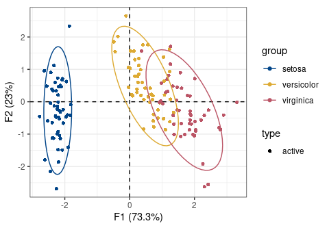
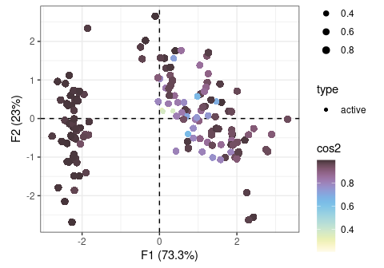
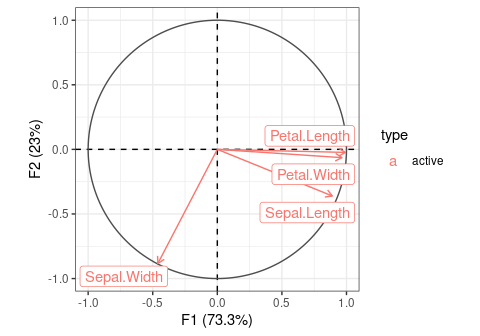
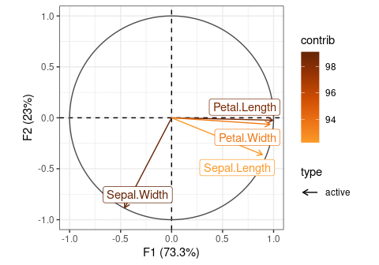
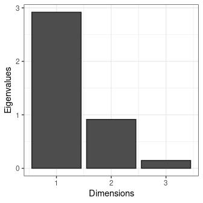
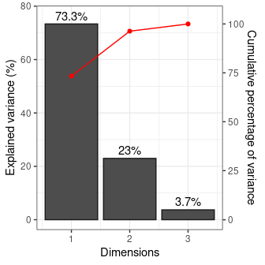
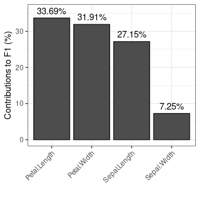
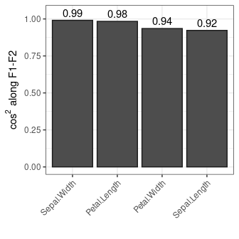
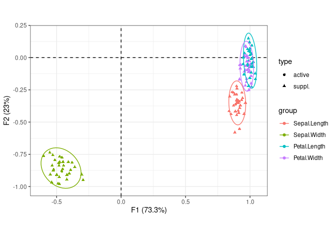

Simple Principal Components Analysis (PCA) and Correspondence Analysis (CA) based on the Singular Value Decomposition (SVD). This package provides S4 classes and methods to compute, extract, summarize and visualize results of multivariate data analysis. It also includes methods for partial bootstrap validation.
There are many very good packages for multivariate data analysis (such as FactoMineR, ade4 or ca, all extended by FactoExtra). dimensio is designed to be as simple as possible, providing all the necessary tools to explore the results of the analysis.
Installation
You can install the released version of dimensio from CRAN with:
install.packages("dimensio")And the development version from GitHub with:
# install.packages("remotes")
remotes::install_github("tesselle/dimensio")Usage
## Load data
data(iris)
## Compute PCA
## (non numeric variables are automatically removed)
X <- pca(iris, center = TRUE, scale = TRUE)
#> 1 qualitative variable was removed: Species.Summarize
## Summarize results for the individuals (first two components)
summary(X, margin = 1, rank = 2)
#> --- Principal Components Analysis (PCA) -----------------------------------------
#>
#> Eigenvalues:
#> eigenvalues variance cumulative
#> F1 2.918 73.342 73.342
#> F2 0.914 22.970 96.312
#> F3 0.147 3.688 100.000
#>
#> Active individuals:
#> dist PC1_coord PC1_contrib PC1_cos2 PC2_coord PC2_contrib PC2_cos2
#> 1 2.319 -2.265 1.172 0.954 -0.480 0.168 0.043
#> 2 2.202 -2.081 0.989 0.893 0.674 0.331 0.094
#> 3 2.389 -2.364 1.277 0.979 0.342 0.085 0.020
#> 4 2.378 -2.299 1.208 0.935 0.597 0.260 0.063
#> 5 2.476 -2.390 1.305 0.932 -0.647 0.305 0.068
#> 6 2.555 -2.076 0.984 0.660 -1.489 1.617 0.340
#> 7 2.468 -2.444 1.364 0.981 -0.048 0.002 0.000
#> 8 2.246 -2.233 1.139 0.988 -0.223 0.036 0.010
#> 9 2.592 -2.335 1.245 0.812 1.115 0.907 0.185
#> 10 2.249 -2.184 1.090 0.943 0.469 0.160 0.043
#> (150 more)Extract
dimesion provides several methods to extract the results:
-
get_data()returns the original data. -
get_contributions()returns the contributions to the definition of the principal dimensions. -
get_coordinates()returns the principal coordinates. -
get_correlations()returns the correlations between variables and dimensions. -
get_cos2()returns the cos2 values (i.e. the quality of the representation of the points on the factor map). -
get_eigenvalues()returns the eigenvalues, the percentages of variance and the cumulative percentages of variance.
## Eigenvalues
get_eigenvalues(X)
#> eigenvalues variance cumulative
#> F1 2.9184978 73.342264 73.34226
#> F2 0.9140305 22.969715 96.31198
#> F3 0.1467569 3.688021 100.00000Visualize
dimensio uses ggplot2 for plotting informations. Visualization methods produce graphics with as few elements as possible: this makes it easy to customize diagrams (e.g. using extra layers, themes and scales).
## Plot active individuals by group
plot_rows(X, group = iris$Species) +
ggplot2::stat_ellipse() + # Add ellipses
ggplot2::theme_bw() + # Change theme
khroma::scale_color_contrast() # Custom color scale
## Plot all individuals by cos2
plot_rows(X, highlight = "cos2") +
ggplot2::theme_bw() + # Change theme
ggplot2::scale_size_continuous(range = c(1, 3)) + # Custom size scale
khroma::scale_color_iridescent() # Custom color scale

## Plot variables factor map
plot_columns(X) +
ggrepel::geom_label_repel() + # Add repelling labels
ggplot2::theme_bw() # Change theme
## Highlight contributions
plot_columns(X, highlight = "contrib") +
ggrepel::geom_label_repel() + # Add repelling labels
ggplot2::theme_bw() + # Change theme
khroma::scale_color_YlOrBr(range = c(0.5, 1)) # Custom color scale

## Plot eigenvalues
plot_variance(X, variance = FALSE, cumulative = FALSE) +
ggplot2::theme_bw() # Change theme
## Plot percentages of variance
plot_variance(X, variance = TRUE, cumulative = TRUE) +
ggplot2::geom_text(nudge_y = 3) + # Add labels
ggplot2::theme_bw() # Change theme
## Plot variables contributions to the definition of the first component
plot_contributions(X, margin = 2, axes = 1) +
ggplot2::geom_text(nudge_y = 2) + # Add labels
ggplot2::theme_bw() + # Change theme
ggplot2::theme( # Edit theme
# Rotate x axis labels
axis.text.x = ggplot2::element_text(angle = 45, hjust = 1, vjust = 1)
)
## Plot cos2
plot_cos2(X, margin = 2, axes = c(1, 2)) +
ggplot2::geom_text(nudge_y = 0.05) + # Add labels
ggplot2::theme_bw() + # Change theme
ggplot2::theme( # Edit theme
# Rotate x axis labels
axis.text.x = ggplot2::element_text(angle = 45, hjust = 1, vjust = 1)
)



Validation
## Partial bootstrap
Y <- bootstrap(X, n = 30)
## Plot with ellipses
plot_columns(Y) +
ggplot2::stat_ellipse() + # Add ellipses
ggplot2::theme_bw() # Change theme
Contributing
Please note that the dimensio project is released with a Contributor Code of Conduct. By contributing to this project, you agree to abide by its terms.